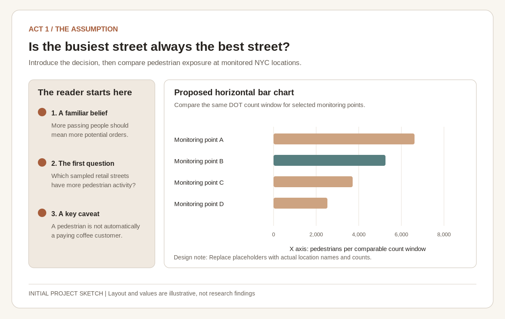
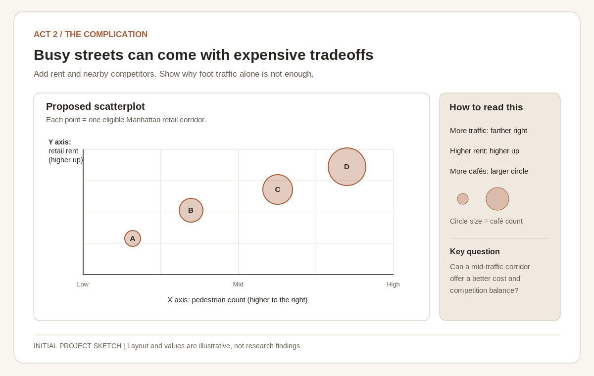
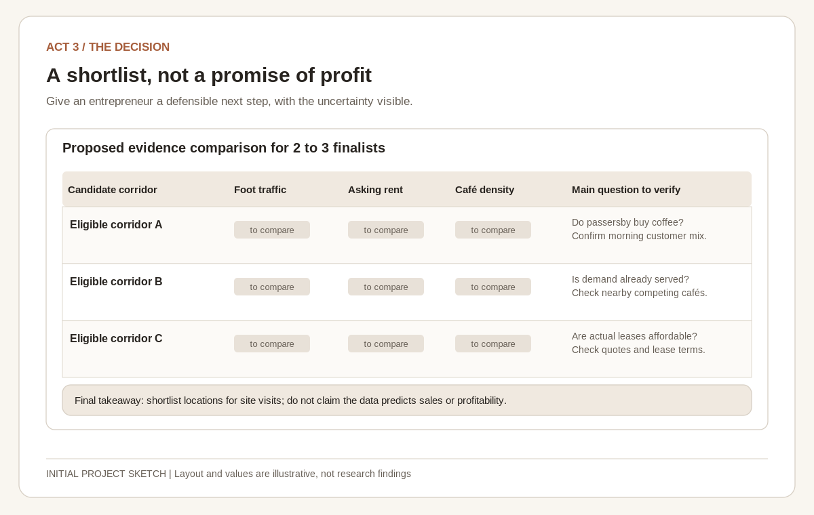

The NYC Café Dilemma
Is the busiest street the best place to open an independent café?
The busiest street is not always the best place for a new independent café. This project proposes a visual story that balances pedestrian exposure, nearby competitors, and rent rather than jumping straight to a neighborhood ranking.
What decision does this story help with?
A first-time owner needs to decide which streets deserve further exploration before committing to an expensive lease. High pedestrian counts may look attractive, but competitors and occupancy costs complicate that initial instinct.
I will compare only commercial corridors with compatible public pedestrian count and rent data. The aim is to narrow down candidates for a site visit, not to recommend a location without evidence.
Aspiring independent café owners evaluating NYC locations.
Traffic, competition, and cost must be considered together.
They know which questions to ask on a site visit.
Is the busiest street always the best street?
An opening pedestrian comparison challenges the idea that traffic alone is enough.

Conceptual layout only. No displayed marks should be interpreted as measured observations.
Busy streets can come with expensive tradeoffs
A rent versus traffic plot adds competitive density as the third dimension.

Conceptual layout only. No displayed marks should be interpreted as measured observations.
A shortlist, not a promise of profit
A comparison table turns evidence into sensible next steps, not a prediction of sales.

Conceptual layout only. No displayed marks should be interpreted as measured observations.
Public evidence, transparent limitations
Pedestrian exposure comes from the NYC DOT sample count dataset. Nearby competitors will be approximated from restaurant inspections after deduplicating establishment records by CAMIS. Rent comes from REBNY's Manhattan retail reporting, using corridor-level asking rents rather than signed leases. All measures must be matched on defensible location boundaries, and source dates will be shown.
Pedestrian counts
Sample locations, count periods, and walking activity. Zeros can mean missing counts.
NYC DOT public datasetNearby café supply
Inspection records, category filtering and unique restaurant identifiers.
NYC DOHMH public datasetRetail asking rents
Published Manhattan corridor rents from the first half of 2026.
REBNY retail reportMethods and source catalog
Sampling notes and source descriptions support reproducibility.
DOT methodology · CSV source catalogHow the final story will work
Tableau Public will supply interactive, annotated charts. GitHub Pages will present them in a scroll-based narrative with clear transitions and source notes. This is deliberately a story, not a standalone business dashboard. I will not claim that these public proxies predict actual coffee revenue or profitability.
Original research question
Which few eligible Manhattan commercial corridors offer a plausible tradeoff among visibility, existing coffee shops, and retail rent, and what still needs to be verified before opening a café?